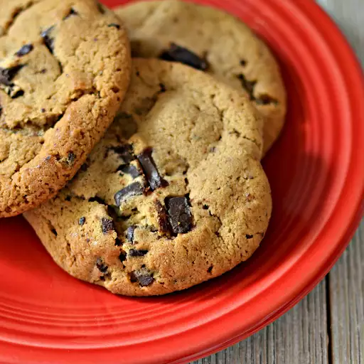

Chocolate Chip Cookies

Soft Chocolate Chip Cookies
One of the most popular chocolate chip cookies recipe.
Ingredients
- 4 1/2 cups all-purpose flour
- 2 teaspoons baking soda
- 2 cups butter, softened
- 1 1/2 cups packed brown sugar
- 1/2 cup white sugar
- 2 (3.4 ounce) packages instant vanilla pudding mix
- 4 eggs
- 2 teaspoons vanilla extract
- 4 cups semisweet chocolate chips
- 2 cups chopped walnuts (Optional)
Directions
- Preheat the oven to 350 degrees F (175 degrees C).
- Sift together flour and baking soda in a medium bowl, set aside.
- Cream together butter, brown sugar, and white sugar in a large bowl. Beat in instant pudding mix until blended. Stir in eggs and vanilla.
- Add flour mixture to the butter mixture until it's well incorporated. Fold in chocolate chips and nuts.
- Drop cookies by rounded spoonfuls onto ungreased cookie sheets.
- Bake in batches in the preheated oven until the edges are golden brown, 10 to 12 minutes, switching racks halfway through.